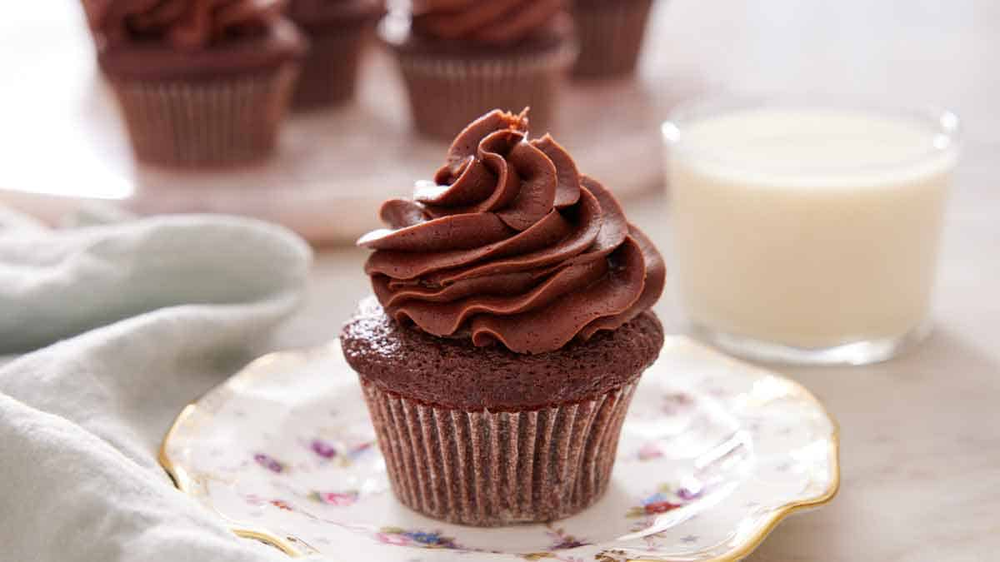

Tarta de Manzana

×

Tarta de Manzana
Ingredientes:
- 4 manzanas
- 250g de masa de hojaldre
- 50g de azúcar
- Canela al gusto
Preparación:
- Pelar y cortar las manzanas en rodajas.
- Extender la masa de hojaldre en un molde para tarta.
- Colocar las rodajas de manzana sobre la masa.
- Espolvorear con azúcar y canela.
- Hornear a 180°C durante 30 minutos.
Cupcakes de Chocolate

×
Cupcakes de Chocolate
Ingredientes:
- 150g de harina
- 150g de azúcar
- 150g de mantequilla
- 3 huevos
- 100g de chocolate negro
- 1 cucharadita de esencia de vainilla
Preparación:
- Derretir el chocolate y la mantequilla juntos.
- Batir los huevos con el azúcar hasta que estén espumosos.
- Añadir la mezcla de chocolate y mantequilla derretidos a la mezcla de huevos y azúcar.
- Agregar la harina y la esencia de vainilla.
- Verter la mezcla en moldes para cupcakes y hornear a 180°C durante 20-25 minutos.
Cheesecake de Fresa
×
Cheesecake de Fresa
Ingredientes:
- 200g de galletas
- 100g de mantequilla
- 400g de queso crema
- 200g de fresas
- 100g de azúcar
- 1 cucharadita de esencia de vainilla
Preparación:
- Triturar las galletas y mezclar con la mantequilla derretida.
- Presionar la mezcla de galletas en la base de un molde.
- Mezclar el queso crema con el azúcar y la esencia de vainilla.
- Verter la mezcla sobre la base de galletas.
- Decorar con fresas y refrigerar por al menos 4 horas.